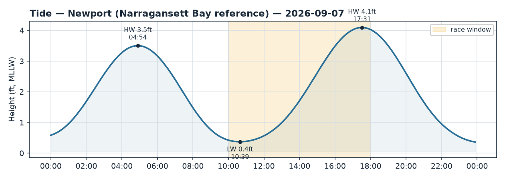
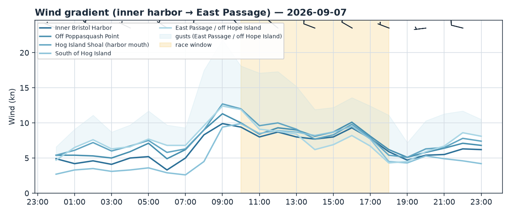
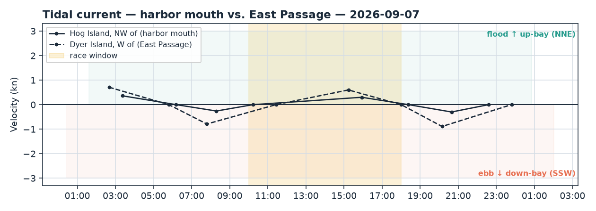

Bristol Harbor · Rhode Island
Mon 07 Sep 2026 · Daysail
A bright, breezy northwesterly day — nice sailing with a puffy edge; best from late morning through mid-afternoon.
The day
It's a lovely day to go sailing. Wall-to-wall sun, comfortable air in the mid-70s, and a northwesterly breeze that sits right in the fun zone — enough to move the boat with a little pep, not so much it's a handful. The one thing to keep in mind is character: a NW wind here blows off the land, so it comes in puffy and shifty rather than smooth. That makes it a spirited, hands-on daysail — great for anyone who enjoys an active tiller, and still very manageable for a relaxed cruise if you keep an eye out for the gusts.
Wind
The breeze is out of the northwest (roughly 320°), easing and backing a touch toward the W as the day goes on. Forecast average is around 8–9 knots with gusts into the 17–18 knot range in the stronger puffs — comfortable sailing that occasionally reminds you it's there. Worth a note: the real anemometers are painting a split picture. Up-bay at Conimicut Light it's already blowing a healthy 12–15 knots, while down at Newport by the Passage mouth it's a softer 8-ish — and obs overall have been running a bit under the models this morning, so treat the higher gust numbers as the puffy top end rather than the steady state.
Because it's a land breeze, expect soft, patchy spots close under the Poppasquash shore (the west side of the harbor) — the Neck throws a wind shadow off its eastern and southeastern edge, so you'll find lighter, fluky air tucked in there and steadier pressure once you work out toward the middle of the harbor, the Hog Island mouth, and the more open water to the south. Late morning through mid-afternoon looks like the best, most consistent window to be out.
Tide & current
Low water is at 10:39 (just 0.4 ft — a properly low tide), so give the harbor edges and any thin, shallow shoulders a wide berth in the late morning; there's not much water over the skinny spots. It fills back up to a high around 17:31. Current is gentle inside the harbor itself: the harbor mouth goes slack near 10:14, then a modest flood builds through the afternoon (setting NNE, up into the bay) toward the next slack around 18:23. Out in the deeper East Passage the flow runs a bit stronger. With a NW wind over that up-bay flood you may notice some light, short chop where breeze meets current near the harbor mouth and out toward Hog Island — nothing dramatic, just a heads-up so it doesn't catch you off guard.
Good to know
Beautiful conditions overhead: sunny and clear all day, highs 71–76°F, no rain in the forecast (0%). Bring sun protection and water — it's a full-sun day. Given the gusty NW puffs into the high teens, it's a good day to keep life jackets on, especially with kids or newer crew aboard, and to be ready to ease the mainsheet in the harder gusts. A nice plan: head out around late morning once the breeze is established, enjoy the steadier midday air, and aim to be back before the low-sun, easing-breeze end of the afternoon — say by 5-ish, which also keeps you off the shallowest spots as the tide refills. Have a great sail!


